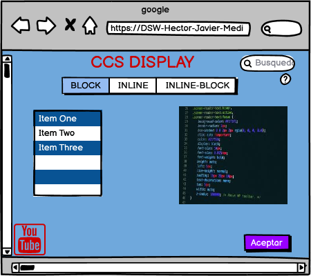

OVA CSS DISPLAY
Objetivo general
Diseñar una OVA con informacion relevante en el tema de propiedades básicas de CCS DISPLAY
Objetivo especificos
- Diferenciar cuando un elemento es inline,block o si es el caso inline-block a la hora de elegir el comportamiento de nuestro elemento en la página
- Usar adecuadamente las propiedades CCS Display para conocer el espacio que ocupa cada elemento dentro de nuestro sitio web
- Conocer la importancia del manejo de CCS Display como parte fundamental de la estructura de nuestra página web
Propiedades CSS DISPLAY
CCS Display establece los tipos de visualizacion internos y externos de un elemento
- Block
- Inline
- Inline-Block
Materiales
Usamos etiquetas exclusivas de las propiedades de CCS,para caracterizar que queremos de cada elemento
- Block : Son los encabezados < h1 > hasta < /h6 >, las citas en bloque < blockquote >,los párrafos < p >",la etiqueta < div > usada normalmente para envolver a otros elementos
- Inline : Ejemplos de estas etiquetas son: < a >, < em >,< del > la etiqueta muy usada < span >, es usado para envolver elementos en-línea para darles estilo sin cambiar su comportamiento
- Inline-Block : Es importante saber que un elemento en línea puede cambiar de manera automática y pasar a ser un elemento de bloque en ciertas circunstancias, sin que nos demos cuenta. En concreto si lo flotamos con la propiedad CSS llamada float, aunque el elemento sea inline (incluso aunque lo indiquemos explícitamente con un display:inline !important;) el elemento adquirirá automáticamente el estilo de bloque para poder aplicar la flotación, que tiene preferencia. Esto es lo que indica el estándar específicamente.
Contenido
- Block: Los elementos HTML como encabezados, las citas en bloque , los parrafos en fin ,al contario del inline,cuando ciertas etiquetas se renderizan en el navegador en líneas independientes,"no mezcladas con el resto del texto"
- Inline : A estos elementos HTML se les llama elementos de línea,es decir que no afectan el flujo de los demas elementos,si se realiza algun cambio en el texto éste solo se ubica a ambos lados
- Inline-Block : El elemento tendrá un comportamiento mezcla entre en Inline y el Block,Los elementos inline-block fluyen con el texto y demás elementos como si fueran elementos en-línea y además respetan el ancho, el alto y los márgenes verticales
Maquetacion
